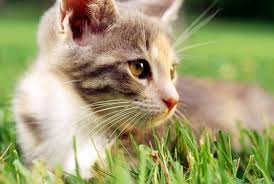

<!DOCTYPE html>
<html lang="en">
<head>
    <meta charset="UTF-8">
    <meta name="viewport" content="width=device-width, initial-scale=1.0">
    <meta http-equiv="X-UA-Compatible" content="ie=edge">
    <title>고양이 이미지 출력</title>
</head>
<body>
    <script>
        //문제)img폴더에 있는 고양이 이미지 10장을 반복문을 사용하여 출력하시오.
        
        //이미지 이름이 앞에는 똑같고 뒤에 넘버링이 부여되어 있을 경우
        for(var index=1; index<=10; index++){
            // document.write('')
            // document.write('')
            document.write(``)
        }

        //이미지 이름이 다를 경우
        var imgs=[
            'cat1.jpg', 
            'cat2.jpg',
            'pooh.gif',
            'pooh.png'
        ]
        for (const i in imgs) {
            document.write(``)
        }

    </script>

    <!-- Emmet확장기능 참고 문서  https://docs.emmet.io/cheat-sheet/ -->
    <!-- img[src=../img/cat$.jpg]*10 -->
    <!-- 
    
    
    
    
    
    
    
    
             -->
</body>
</html>